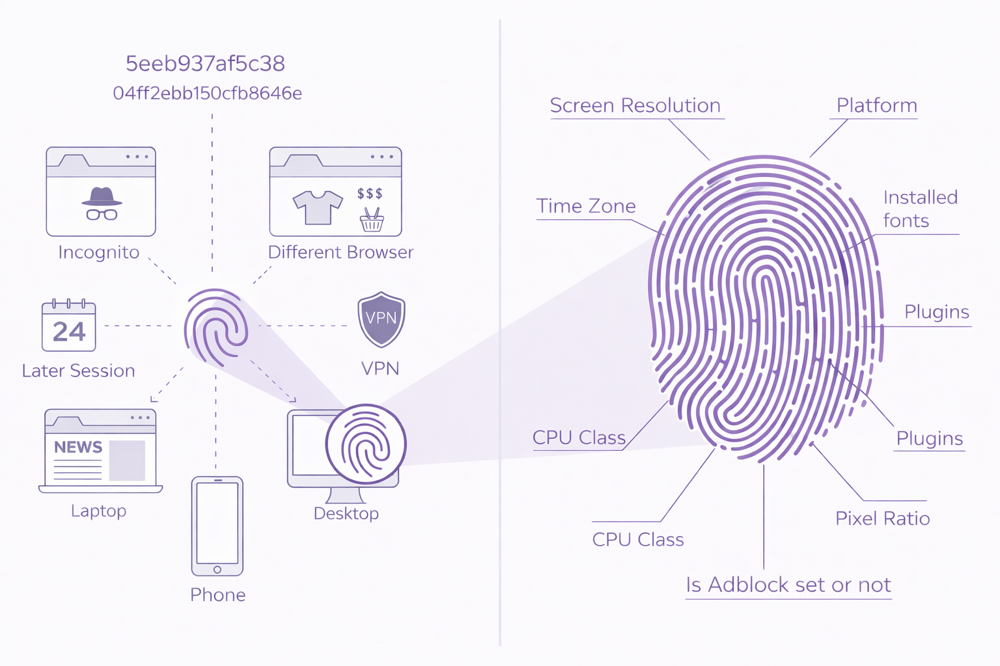

Why do I Need 404?
404's Role
404 utilizes enterprise-tested solutions to change the fingerprint of any machine.
Whether you're using a Macbook, PC, containerized application, an ad-blocker should not matter to the websites you visit. With 404, that information never leaves your machine, and the servers collecting your data are fed a false, believable fingerprint carefully crafted in-house.
Anatomy of a fingerprint
Every machine is unique. Companies combine dozens of semi-unique values to create a single device fingerprint. This allows ad-tech companies to follow you across websites, time, incognito browsers, and even VPN sessions.

Browser Fingerprinting
Your online fingerprint is becoming increasingly unique. Modern tracking doesn't just rely on cookies; it builds "personality clouds" from hundreds of data points: TLS handshake patterns (JA3/JA4), HTTP header combinations, canvas rendering quirks, microphone/speaker/headset model and brand, font enumeration, WebGL parameters, audio context characteristics, and behavioral timing patterns... to name a few.
The collection of these semi-unique values (.nav properties, timezone, screen resolution, browser type, etc.) allows servers to pretty confidently identify users as not semi-unique, but entirely.
Commercial fingerprinting services like FingerprintJS, Fingerprint.com, and DataDome can identify users across...
-
Different browsers on the same device
-
Private/incognito modes (linked to 'public' browsing profile)
-
VPN connections (or proxies, even residential ones)
-
Cookie & cache clearing
-
Different networks
This isn't paranoia. This is surveillance capitalism.
Who is this for?
Anyone who's tired of being tracked across the web despite "privacy tools" that don't actually work against modern fingerprinting.
404 has the capability to defeat modern fingerprinting techniques.
The included profiles (firefox-windows, chrome-windows, edge-windows) produce consistent spoofed fingerprints but are still under active development. Setup is straightforward if you're comfortable with:
If you’re comfortable with manual maintenance and iteration, you’ll get real privacy gains.
The Bigger Picture
This isn't just a tool. It's proof that illegibility is technically feasible.
As governments worldwide push for mandatory surveillance (Chat Control in the EU, client-side scanning proposals, "lawful access" backdoors), and as AI makes behavioral profiling trivial at scale, the ability to be untrackable becomes existential.
404 demonstrates that privacy through illegibility isn't theoretical. It's implementable, it works, and it's available to anyone.
Why shouldn't I install and run this on my machine?
This repository, in its current state, is built for researchers, developers, and privacy advocates who understand the trade-offs and are comfortable with...
Manual configuration - Profiles require review and occasional tweaking based on your use-case and threat model. If you're confused about configuration, feel free to reach out in an email, open a GitHub issue, or submit a ticket in the Discord.
!Occasional! breakage - Breakage is honestly limited to having to manually solve a captcha every now and again. Still, some websites will break, some login flows will fail, some features won't work. This is the nature of deep protocol mutation. If there's something critical, open a GitHub issue and I will try to find a workaround.
Active maintenance - Browser updates change fingerprinting surfaces. Profiles need updating. You can't just "set it and forget it." I will update as frequently as I can.
Technical comlexity - It's a lot. I know, but honestly it kind of just works right now. It may get you rate-limited or flagged as a bot (I haven't been yet, and I run this jawn every day), but you should be able to pass Captchas and prove you're a human -- no, the pole is not a part of the 'street light.'
I do not know the long term effects on account usage. I have been logging-in via this proxy using my personal Google, Microsoft, and Apple accounts for the last 9-ish months, and I have experienced no retaliation (bans and whatnot). That is not to say you will have the same experience. I strongly recommend that you use alternate/disposable accounts if you're going to be testing OAuth or other login flows.
I am not a cybersecurity engineer. I hammered this together and may have missed something important. Feel free to reach out with security vulnerabilities @ 404co@proton.me